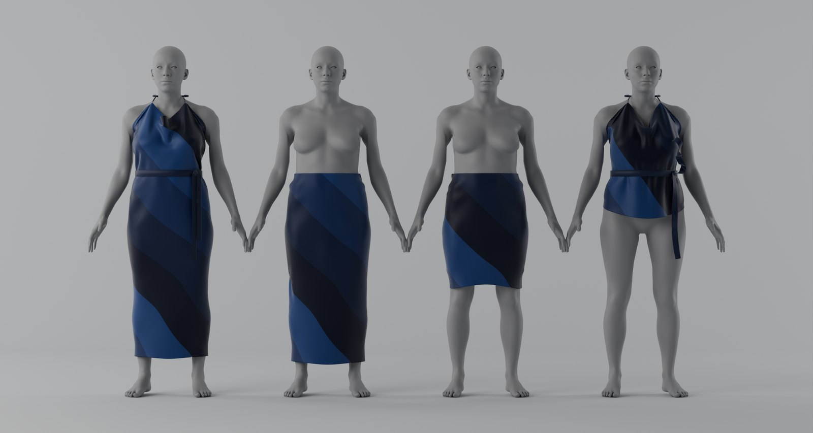
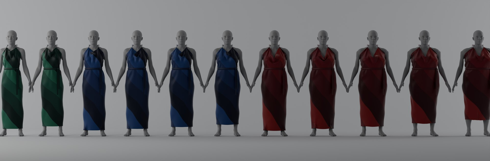
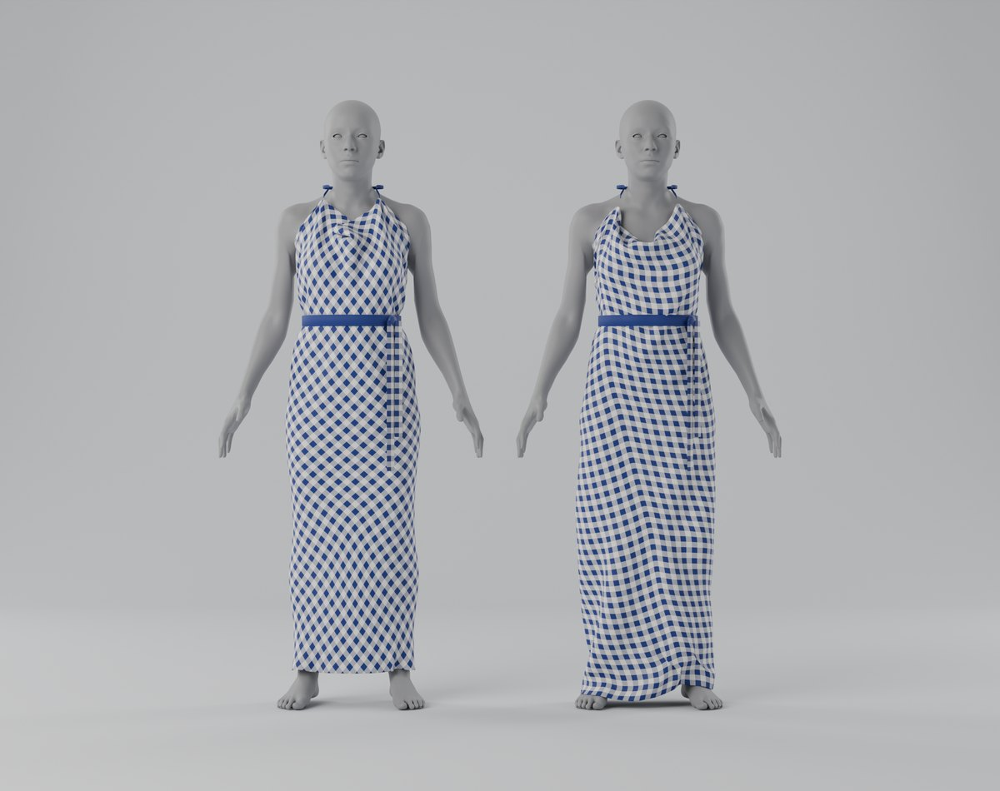

The only bias
a garment should have.
Most woven clothing is cut so its threads cannot adjust around the body. Good Bias sews four straight strips onto the true bias, so the cloth does the fitting. One cut covers a wide run of sizes, with no offcut and about a fifth less cloth than the same gown cut as bias panels. It rests on a law I proved for how far woven cloth can move around any body.

Enter a body. See the cloth respond.
- Thread angle at hip
- Thread angle at waist
- Thread angle at bust
- This body asks the threads to
- Lowest lock any cut could need here
Threads solved live on a dress form with these measurements. Drag to turn. Blue and coral are the two thread directions; 90 degrees at rest.
The whole pattern is one drawing.
Tear or cut along a thread. Every strip is the same straight rectangle. The sash and straps come from the same cloth.
- Tear four strips and the ties along a thread.
- Sew each long edge to the next, stepped down by one strip width. The tube is now on the true bias.
- Fold the top and bottom points inside along one hoop, to make a casing and a level hem. Thread the cord and add the neck ties.
- Wear. Tie the sash. The threads close at the waist and open over the hip.
Fewer cuts for more bodies.
The law turns each body into an interval of strip widths. Covering a size chart becomes an exact count.
Measurements are chart midpoints from a public size table. Bars show the strip widths that fit each size.
One law for all woven clothing.
Draw a line on any woven garment. Without folding, the cloth can change that line's length by at most a factor that depends only on its angle to the threads and on the cloth's lock.
What one uncut tube can dress
From ANSUR II, the US Army's 2012 anthropometric survey of 1,986 women. Biceps is measured flexed, which overstates the sleeve ratio.
What the simulation shows.


The law.
widest girth / narrowest girth ≤ tan(45° + γ/2)
Without folding, a woven tube cannot span more than this ratio. γ is how far the cloth shears before it locks. The limit holds for every body, every bias angle and any number of strips. Only the true bias reaches it.
Short hoops. The cloth is the plane with unit threads, joined up by the lattice vector (a, −b). A straight cloth hoop has length ∫ √(a² + b² − 2ab cos w), so it never exceeds cmax = √(a² + b² + 2ab sin γ). Hoops sweep the whole body, so the body's sweep-out width is at most cmax.
Long loops. Any loop around the tube moves (a, −b) in the cloth. Surface speed is at least the smaller of two Euclidean norms, x² + y² ± 2xy sin γ. One linear form is bounded by both when sin γ ≤ b/a ≤ 1/sin γ, which gives length at least cmin = √(a² + b² − 2ab sin γ). Outside that band the bound is a cos γ, and the ratio is smaller.
Sharp on a round body. Threads at w/2 to the meridian, with c = 2a sin(w/2), form an exact net. On a round body with K r² ≤ 1, the hip is exactly the sweep-out width: a 1-Lipschitz map to a round sphere and Lévy's isoperimetric inequality prove it.
Widest means the sweep-out width: the least possible longest loop in any family of loops passing over the widest part of the body. The round-body formula is classical braid geometry. I extended it to bodies of any shape and to any woven pattern.